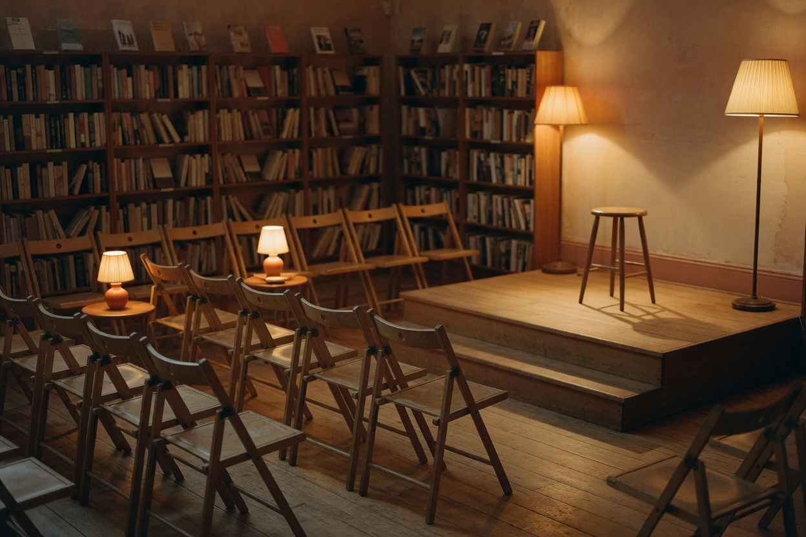

Plate III · chairs set, stool waiting.
All eveningsEvents Nila Voss
Nila Voss reads
A sample evening. Nila Voss is a fictional author. The Salt Inventory is a fictional book. The chairs in the photograph are real enough to sit in.
She reads from the middle, not the opening — the chapter in which the warehouse clerk starts numbering absences instead of crates. Afterward there are questions if anyone has them, and coffee if anyone wants it. Cup prices are not published.
This page describes one sample event. It is not a ticket, a reservation, or a live listing.
| Who | Nila Voss (sample) |
|---|---|
| From | The Salt Inventory (sample title) |
| When | Thursday 12 March (sample date). Clock times are not published. |
| Where | The evening room, behind the shelves. The street address is not published. |
| Admission | Admission price is not published. |